Ba-ad - III
MORI A THADEMAN
Aya hadap sa kiya-osaya ko katanos ago kalbilian o Qur'an sangkanan a miyanga-oona pandangan na so kapamola o babaya rekaniyan. So babaya ko Qur’an na kailangan ko gi-i kapanagombalaya ko babaya ko Allah, ago sakamaoto mambo [ma-ana so babaya ko Allah na kailangan ko gi-i kapanagombalaya ko babaya ko Qur’an. So babaya ko isa kiran na pekhitoro iyan so babaya ko ika dowa.
So kiya-adena ko manosiya sangka-iya donya na aya bo a antap na so kakowa o kenal ko Allah, go so langon o ka-aden na aya bo a kiya-aden niran na pantag ko manosiya. Lagid o katharo o isa a pababayok a taga Persia:
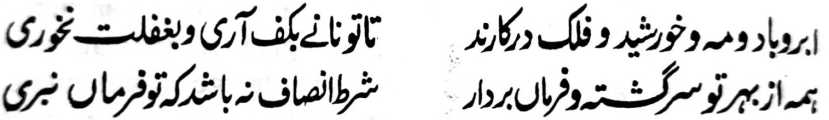
So gabon, so ‘endo, so olan, so alongan sampoma ko langit na tatap gi-i nggalebek;
Sabap sa an ka gi-i mazokat so sangor ko kawig-oyag ago angka di pephakakan sa ropa a kambotakal;
So langon o ka-aden na langon gi-i nggalebek ko ropa pangongonotan ko kamapiya-an ka;
So kokoman o kaontol na diden masamporna amay ka di ka phapasiyonot.
Giyoto-i sabap a so manosiya na kowa sa ‘enda-o ko kitotomanen niyan ko sogo-an non ago langon phasiyonot ko misesenggay a galebek iyan sa gi-i Ron kazoa-soata.
Pekhasalak, a mokit sa tapa-os, a di ran ithoman so galebek iran a pando-an kiran o Allah. Di magoran ko masa a pangoran, di zamber so ‘endo’ sa lagid o kalalayami ron; sakamaoto mambo so kapekhasalin o olan ago so alongan igira mimbarahana. So kakampet iyan na so langon o ka-aden na phapasiyonot sa sogo-an ko kasalin o kalalayami ko wara-an niran sabap sa tapa-os ko siran a inindarainon niran so sogo-an kiran o Kadenan niran. Tanto a piyakamemesa a langon niran na piyakaphasiyonot ko kakowa o kailangan o manosiya, ogaid na so kaphapasiyonot iran na di niyan khatoyok so manosiya ko kaphasiyonot iyan ko Kadenan iyan. So bo so babaya-i tanto a phaka-ogop ko manosiya sa kapaka-pangongonotan niyan ago kapaka-mbayorantang iyan ko Allah.
Mata-an! A so pephangabaya na phapasiyonot ko pekhababaya-an niyan.
Igira miyangabaya so tao, na so kaphapasiyonot ago kambabayorantang ko pekhabaya-an niyan-i mimbaloy a dadabi-atan niyan ago mimbaloy a ika dowa a wara-an niyan. So kasopaka ko pekhabaya-an niyan na mimbaloy a lagid sa karegen o kaphasiyonot ko di niyan khabaya-an.
Isa a kakhapanagombalay o babaya ko tao na giyangkoto a kaphagilaya ngka ko kata-id iyan ago so kapiya niyan. Giyangka-iya a kailay na khapakay a misabap sa kailay a mata o di na kailay a poso. Opama ka so kapekhailaya ko mataid a bontal na pephakagamit sa kabaya, na so mambo so kapiya o lago na pekhasalak a pephakagawi. Isa a pababayok a taga Persia a pitharo:
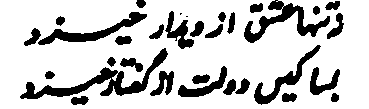
Kena ba so bo kataid-i phakagawi sa babaya
Aya den a kalilid na giya-i na pekhakowa o tao a nggolalan sa malano a katharo. Pekhasalak a so kapiya o lago na di mai-inengka na aya pephakagawi ko poso, go pekhasalak a so kapiya ago ongangen o katharo-i pekhasabapan sa kakhatago-i ko tao sa babaya. So manga tao a miyakasagadon na aya mosawir iran na o kabaya o tao a mapanagombalay so babaya, na aya den a pelomameka-an o tao na so manga pipiya a sipat o pekhabaya-an niyan, ago daden a salakao rekaniyan a phadalema o tao ko poso iyan. Mabebenar pen [angka-iya tindeg] ko babaya a madodonya a so kailaya ko kataid a bontal o di na kapiya o lima na pekhasogo iyan so tao sa kailaya niyan ko ped ko manga anggaota o lawas o pekhabaya-an niyan, ka aden pagomareg so panamar sa kakowa o dingan-dingan o poso, ogaid na giyangka-iya a pangkatan na diden khara-ot. Lagid o katharo o isa a pababayok a Urdu:
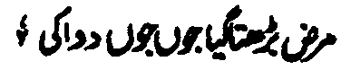
So sakit na baden pephagomareg ko kitataros o bolong
Opama ka so oriyan o kapamola o od si-i ko basak, na indarainon o tao so baon bo kapaka-igi, na da den a pamomolan a baon metho. Sakamaoto mambo, o si-i ko oriyan o katago o babaya ko tao, na diden zagipa-an o tao so pekhabaya-an niyan, na giyangka-iya babaya na baden khada ko kapekhalanggay o masa. Ogaid na opama ka so tao na tatapen niyan so kapipikira niyan ko kata-id o bontal, so kapiya o lawas ago so kapiya o goa-goay ago so adat ko gi-i katharo-a ko pekhababaya-an, na so babaya na gi-i magomareg ko kaphagiseg o masa.
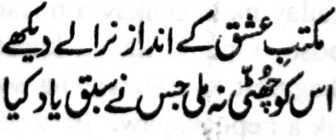
Tanto a sambida so okit ko paganadan ko babaya. So langon o miyasowa iyan so ‘enda-o ron na di ron khabaya mawa.
Oba ngka kiyalipatan so ‘enda-o o kabaya, na aden a kaphakapalagoy ngka on. Ogaid na saden sa kala a kapekhasowa-a ngka on na giyoto den-i kala a kiyalitagi reka.
Sakamaoto, a opama ka so mama na kabaya iyan a kapanagombalay o babaya iyan ko isa a tao a miyapatot rekaniyan so kakhababaya-i ron, na mbabanoga niyan so kapiya, go so kalano ago so manga ala a sipat o pekhabaya-an niyan ago di niyan khaso-aten o ba so bo so saba-ad a katawan niyan non, ogaid na tatapa niyan so kapephanagontamani niyan ko katokawi niyan ko kadakelan kiran [a manga sipat].
Opama ka di khaso-at so tao a pephamagida-an ko di niyan kakha-ilaya so tarotop a bontal o pagida-an niyan sangka-iya a donya, ago aya den a mata-an a singayo iyan na so kala-a mailay niyan ko bontal o pekhabaya-an niyan, so pen so Allah, a Soti, a Sekaniyan so Onayan a Bowalan o langon o kalano ago kata-id, (ka aya mata-an na daden a kata-id sangka-iya donya inonta so Rekiyan), ka mata-an a Sekaniyan so pekhababaya-an a so Kalano Iyan ago Kada-a pa-awing Iyan na da-a tamana iyan. Isa ko manga rarayag ko pithamanan o Kapiya Niyan na giyangkanan a Qur’an, a sekaniyan den-i Katharo o Allah. Antona-a pen-i makalawan sa kapipiya ginawa ko tao a pekhababaya-an niyan so Miyangaden, a ba niyan kalawani so katawi ron a so Qur’an na initoron o Allah. Pitharo o isa a pababayok:
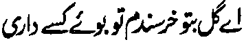
Hay Obar-obar! Izan ako reka a masoso-at. Zisi-i reka so kanayo o isa tao (a pekhababaya-an).
Apiya pen malo tano pakalipatan so katawi tano a so Qur’an na si-i makapopo-on ko Allah ago isa a Sipat Iyan, na so bo so kalano o Qur’an ko Rasulollah (Sallallaho ‘Alaihi Wasallam) na kiyatangka-an den a kasabapan sa kakhababaya-i ron o Muslim. So bo so gi-i kapaganada ko Qur’an na pekhatangked ko tao a dapen a mapiya a ba maka liyo ko Qur’an. Pitharo o isa a pababayok:
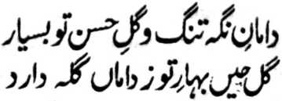
So manga diyangka o kailay na masimpit go so manga obar-obar o kalano oka na tanto a madakel; Si tao a komowa ko manga obar-obar ko bowalan ka na mipekheno niyan so kaito o khagamak iyan.
Aden pen a salakao a pananaro-on a lagida-i sa isnad:
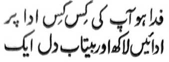
Pira ko manga kapiya ngka-i [patot a] khababaya-an; so kalano-o ka na di khaitong na so poso aken a di phakadekha na isa-isa.
Marayag a so masanggila a pembatiya sangkanan a miyanga-aaloy a manga Hadith, na da den a mala-i kipantag a nganin sangka-iya donya a ba da makabira-i ko pamikiran. Da den a matatago ko tao a babaya ago mapiya, na so katarotop iyan na si-i bo khato-on ko Qur’an.
(1) Si-i sangkoto a paganay a Hadith na so kalbihan o Qur’an na kiya-ombawan niyan so bontal, melagid o so paras o di na so dalem, a khato-on ko langon taman sa donya; so langon o kadakel o bilangan o manga pipiya sipat a khapikir o tao, na so Qur’an na maka-oombao ago da-a saginda niyan kiran langon. So Qur’an na makalelebi ko langon o pekhababaya-an a nganin, melagid o pizatimanan o di na kalangon niran.
(2) Opama ka pekhababaya-an o tao so isa a tao sabap ko kadakel o manis iyan, na so Allah na inimasad iyan [si-i ko ika dowa a Hadith] na imbegay Niyan ko pembatiya sa Qur’an so lawan pen ko imbegay Niyan ko Iangon o tao a pephamangeni Ron. Opama ka so tao a kiyababaya-an sabap ko daradat iyan, o di na kaporo o sowa iyan o di na so manis iyan, na pitharo o Allah [si-i bo sangkanan a Hadith] a so kapakalelebi o Qur’an ko langowan a katharo na
lagid o kapakalelebi o Allah ko langowan o kaaden Niyan, o di na lagid o kapakalelebi o dato ko manga oripen niyan, o di na lagid o kapakalelebi o khirek si-i ko langowan o rek iyan.
(3) O peman o so tao na mababaya sa tamok, merip-ripet, manga oripen ago manga ayam, ago mababaya tomagikor sa mapepento a ayam, na tiyapa-osan sekaniyan (si-i ko Hadith a ika 3) a so kenal ko Qur’an na lebi a mala-i arga a di so apiya-i kadakel iyan a mapiya ayam a miyakowa sa da kapelogati ago da gasaba.
(4) O aden a Auliya a gi-i mbabanog sa paratiyaya ago kalek ko Allah, ago gi-i meromasay sa kakowa-a niyan non, na so Rasulollah (Sallallaho ‘Alaihi Wasallam) na miyatharo iyan (si-i ko Hadith a ika 4) a so siran a mapasang-i kabatiya sa Qur’an, na ipagitong sekaniyan a ped ko manga Mala-ikat. So paratiyaya o manga Mala-ikat na da-a a phakalawanon, sabap sa daden a khato-on a masa a ba iran masopak so Allah.
O peman o so tao na mababaya sa kakowa sa panakepan a balas o di na o kabaya iyan a so manga katharo iyan na matakep so kapened iyan, na pamimikirana niyan angkoto a apiya so pembatiya [sa Qur’an] na pephamangisozong ko kapembatiya iyan na takep a balas a pekhakowa niyan.
(5) So tao a tangasigi go aya bo a kapaparo niyan na so marata a ola-ola ago so kapangasigi na mimbaloy a ped ko dadabi-atan niyan ago di niyan mipembelag angka-iya a marata, na khapakay a maka-ontol angkoto a kapangasigi pantag ko kikasigin ko ‘hafiz’ a sekaniyan a so
kalebihan niyan na khapakay so kipangasigin non, sa lagid o kiyatharo-a on o Rasulollah (Sallallaho ‘Alaihi Wasallam) (Hadith a ika 5).
(6) Pakitokawan ko langon o tao a mabahaya sa onga sapad ago di khaparo o di makakan sa onga sapad, a so Qur’an na lagid o darangita Opama ka so tao na mababaya sa mamis, na kenala niyan a so Qur’an na mamis a di so onga korma (so Hadith a ika 6 na miya-aloy niyana-i).
(7) O peman o so tao na mababaya sa bantogan ago daradat a go di sekaniyan khaparo o di maped ko pephamagodasa, na kenala niyan a so Qur’an na ipephoro iyan so daradat o pembatiya-on, melagid sangka-iya donya ago sa Akhirat. (Miya-aloya-i ko Hadith a ika 7).
(8) O peman o so tao na kabaya iyan a makakowa sa magi-ikhlas ago zasalimbotawan a bolayoka, a riparado a melinding rekaiyan ko oman-i samok, na kenala niyan a so Qur’an na riparado sa kapelindinga niyan ko mananagontaman non si-i sa hadapan o kokoman o Datu ko langon o datu (sa lagid o kiya-aloy niyan ko Hadith a ika 8).
So siran a gi-i mababanog sa pagenes na aya niyan gi-i ipaginetao na so gi-i niyan kapangenala ko mbaram-barang a osayan, ago pekhalipatan niyan so pithamanan a kapipiya ginawa sangka-iya donya sabap ko babaya iyan ko manga i-ito a bandingan, na kenala niyan a so sosoratan ko Qur’an na tamok a mapepeno a pagenes (sa lagid o kiya-osayaon ko Hadith a ika 9).
Aden a tao atatago-an niyan sa kipantag so kambabanog sa page’ma-an a pagenes, ago aya katawan niyan a mapiya pasad na so kiyaped iyan ko thatandingan ko gi-i kapanomariya-a ko masasala ago gi-i niyan panagontamanan a gi-i niyan non kanggalebeka, na kenala niyan a so Qur’an na piyayag iyan angkoto a manga pagenes ago so kadalem o ma-ana niyan na da-a taman niyan a giyoto-i mitotoro o Hadith a ika 10.
(9) O so tao na gi-i managontaman sa kapakambalay sa maporo a manga walay, ago kabaya iyan a so darepa iyan na h-i matago ko ika pito ka andana, na mata-an a so Qur'an na ipephoro iyan so darepa o pembatiya-on si-i ko ika pito nggibo ka andana ko Sorga.
(10) O peman o so tao na aya kabaya iyan na kandagang a mala a laba niyan non ko maito a galabek iyan, na kenala niyan a so kapembataya-a ko omani batang ko Qur'an na pephakabegay sa sapolo a mapiya (sa lagid o kiya-aloy niyan ko Hadith a ika 10).
(11) O aden a gi-i mbabanog sa sangkad ago panggao a datu, ago misasabap ro-o a gi-i makithidawa sa themowan si-i sangka-iya donya, na pamimikiranan niyan a so Quran na pakapezangkad niyan so mbala a lokes o mananagontaman non sa sangkad a so katihaya niyan na daden a lagid iyan sangka-iya donya (Miya-alya-i ko Hadith a ika 11).
(12) O aden a mapasang a salamangkero a pekhakapetan niyan so waga si-i ko liman niyan o di na pekha-ami iyan so pekhadeg a tao a kogit si-i ko ngari iyan, na pamikira niyan a so Qur an na pephakalinding apiya pantag ko apoy ko Naraka. (Pantag si-i na ilay angka so Hadith a ika 12).
(13) Madakel a tao a kabaya iran a makapiya so gi-i niyan kapaki-ngginawa-i ko manga poporo ko parinta ago tanto niyan a ipephangandag so gi-i niyan kapanothola ko oriyan o kinitana o kasala-an ko miyakasopak na miyakaliyo sa kalaboso sabap ko pangeni angkoto a maporo ko parinta. Pantag ko kapakarani ran sangkoto a maporo, na phagosaran niran sa oras ago pirak oman gawi-i pantag sa gi-i ran kapamoday ago gi-i kandiyatora ko kakan ago so manga ped ro-o. Sabap ko sapa-at o manga pababatiya on na so Qur'an na pendiyator niyan so kapakalidas ko Naraka o sapolo a manga tao a miya-patot kiran so Naraka. (Miya-aloya-i ko Hadith a ika 13).
(14) Pamimikiranen tano so Hadith a ika 14. O aden a tao a mababaya sa manga obar-obar ago manga sapadan ago so manga amot a kanayo, na pipipkira niyan a so Qur’an na ini-ibarat sa kastori. O aden a tao a mababaya sa mamot a kabaya iyan a ipha-igo iyan so miyagango a kastori, na aya ibarat o Qur’an na lagid o tago-ai sa kastori. Mataga-i ibarat, ka aya katitho niyan na so kastori na di khi-abay ko kanayo o Qur’an. So manga nganin sangka-iya donya na di khi-abay ko manga nganin sa Sorga. Pitharo o isa a pababayok a taga Persia:
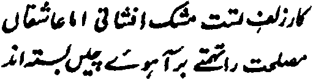
So kipekhisamborak o kastori na aya mata-an niyan na sabap ko bontal ka. Misabap sa kanget na so manga kanakan na gi-i ran panenditan so saladeng a insik (miyapanothol a pekha-poonan a kastori)
(15) So tao a lalayon mapheraneg ago gi-i nggalebek pantag sa kalek sa siksa, ago da-a pharatiyaya-an niyan a apin-apin, na phakakowa sa gona ko katokawi niyan sa so tao a so poso iyan na da-a darepa-on o Qur’an, na miyaka-ibarat sa walay a
miyageba (sa lagid o kiya-aloy niyan si-i ko Hadith a ika 15)
(16) O so barasimba na gi-i mbabanog sa makalelebi a okit o langowan a simba ago ma-awan sa ba niyan baden di matembang so ginawa niyan ko amal a pithamanan a mala-i balas, na kenala niyan a so kabatiya sa Qur’an na ka-oombawan niyan so apiya antona-a okit a simba, ago miyapento ko kiya-aloyaon ko Hadith a ika 16 a mala-i balas a di so Sambayang a sunnat, powasa, tasbih ago Tahlil. [Karawatib]
(17)-(18) Aden a manga tao a tanto a mababaya sa manga o-ogat a ayam, sabap ko kala a maphagarega iyan a di so kalilid a ayam. So Rasulollah (Sallallaho ‘Alaihi Wasallam) na pinto iyan ko katharo iyan a so kapembatiya-a ko Qur’an na lebi a mala-i kipantag a di giyangkanan a manga ayam. (Ilaya ngka ko Hadith a ika 17)
(19) Madakel a tao a tanto niyan a miya-awida akal so kapiya o lawas iran. Gi-i siran melogat ago gi-i pha-igo oman gawi-i, pephalalagoy siran o di na pelalag siran igira kapipita. Aden peman a manga tao a maka-mboboko, go mararata-a ginawa iran ago sasawanen. So Rasulollah (Sallallaho ‘Alaihi Wasallam) na miyatharo iyan a so ‘Surah Fatihah’ a pephakabolong ko omani sakit ago so Qur’an na pekhabolongan niyan so sakit o manga poso, sa lagid o kiya-aloy niyan ko Hadith a ika 19,
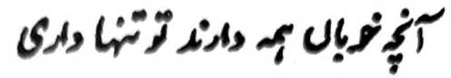
So langon o matatago [a kalano] ko manga ped a pekhababaya-an, na seka bo-i langon non matatago.
(21) Madakel a tao a mababaya manimo sa tamok. Sabap sangka-iya a hadap, na gi-i ran ipeliget so pangenengken ago nditaren, pezagad siran sa karasayan ago miyathagombalay kiran so kabosao a diden khapeno o tamok. So Rasulollah (Sallallaho ‘Alaihi Wasallam) na tiyapa-osan tano niyan sa aya bo phamosaka-an na so Qur’an. Da-a posaka sangka-iya donya a ba-on maka-ombao. Da-a pathamo-tamokan a ba si-i makalawan. (So Hadith a ika 21 na maka-antap si-i).
Sakamaoto mambo a o aden a tao a mababaya sa sindao ago phagosar sa sapolo timan a bombiliya si-i ko soled o gibon niyan, na kenala niyan a so Qur’an na aya makalelebi ko langowan a sindao.
(22) So manga tao na tanto niyan a pekhababaya-an so kapaka-kowa sa pamemegayan, ago i-inamen niran a aden a pamemegayan a pho-on ko manga ginawa-i ran oman gawi-i. Pephaka-oladen niran so kadakel o ginawa-i pantag bo si-i. O aden ko manga ginawa-i niyan a da on makapakawit ko bagi-an niyan ko manga onga sapad ko hasinda niyan na pekhitata iyan sekaniyan. Kenala iran a so Qur’an naya pithamanan a mamemegay. Pethoron so kalilintad ko siran a pembatiya-an niran so Qur’an. O miyabira-i ka ko isa a tao sabap ko kapephakawiti niyan reka sa pamemegayan oman gawi-i, na khababaya ka ko katokawi ngka a so kimbolayoka-an ko Qur’an a pekhabegan ka niyan sa tanto a mala-i arga a pamemegayan. (Ilaya ngka so Hadith a ika 22),
Aden a manga tao a gi-i makithalasogo-ay ko sakatao a wazir, ka an niyan siran ma-aloy ko hadapan o datu; aden pen a pembodain niran so manga toma-ta-alok ka an niran mabantog si-i sa hadapan o maporo iran. Aden peman a pephanonogo sa manga ped ka aniran ma-aloy so ngaran niyan sa hadapan o pekhabaya-an niyan. Kenala angkanan a manga tao o andamanaya, misabap ko Qur’an, na khabaloy siran a maporo-i arga sa ka-aloy o Kadenan ko ingaran niran. (Miyato-on a tanowa-i a miya-aloy ko Hadith a ika 23)
(23) O peman o so tao na kabaya iyan a katokawan niyan so pithamanan a nganin a pekhababaya-an o pekhabaya-an niyan, ago makapagi-iyasa sekaniyan sa kapenggalebeka niyan ko pithamanan a maregen asar bo ka makowa niyan angkoto a nganin, na kenala niyan a dapen a nganin a makalawan sa kapekhababaya-i ron o Allah a makaliyo ko Qur’an.
(24) Aden pen a saba-ad a gi-i ran mbabanogen a kapakarani ran ko hadapan o datu ago, sabap si-i, na bitadan niran sa mapiya antangan ago galebek ko tenday o kaoya-goyag iran. Misabap ko Qur’an ne gi-i tano mbaloy a pekhababaya-an o Allah, a si-i sa Hadapan Niyan na so langon o datu na daden a kapa-ar iran. (Ilaya ngka so Hadith a ika 24)
Piyakamemesa a pantag bo sa awida akal ko kaped ko gi-i mamagodasa, o di na so kaped ko panganganop o isa a tao a aden a kadato iyan, na so manga tao na pezenggayan niran sa oras, go pirak ago di kapaparo. Inokitan iran so mbaram-barang a okit a kapakarani ran kiran na miya-antiyor iran so di tatap a kapaginetao iran ago so niyawa iran, sabap bo sa kakowa-a ko di benar a bantogan. Ino ba di patot so kaperomasay ko kakowa-a ko titho a bantogan, ago kabaloy a ped ko matatago ko Hadapan o Allah? O zenggain niran so tenday o kapagintao iran pantag bo kapanakabor sangka-iya donya, na si-i tano pen senggain so saba-ad ko kaoya-goyag tano ko kaso-at o Sekaniyan a migay ko niyawa tano imanto.
(25) Opama ka mababaya ka sa ‘chistiat’ ago da -a khato-on ka a darepa a merenekeon so pamikiran inonta ko kalilimod o manga barasimba, na kenala ngka a so kalilimod a pembatiya-an non so Qur’an na lebi a mapiya a pekhagawi ko pamikiran o tao a pithamanan a maliliwat.
(26) O kabaya a ka a magawi reka so inengka o Lebi a Mala a Kadenan, na layama ngka a ginawa ngka ko kapembatiya-a ko Qur’an (Piyagosaya-i ko Hadith a ika 25 ago ika 26)
(27) O tiyangked tano a seketano na manga Muslim ago pekhagedam tano a bantogan tano so Islam, na kenalen tano a sogo-an o Rasulollah (Sallallaho ‘Alaihi Wasallam) a so Qur’an na mbatiya-an ko okit a domada-iton. O so Islam tano na kena ba matag katharo ago aden a kitotompok iyan ko kapangongonotan ko Allah ago so Nabi Niyan, na kenalen tano a so Allah ago so Rasulollah (Sallallaho ‘Alaihi Wasallam) na inisogo Iran so kapembatiya-a ko Qur’an.
Opama ka seka na tatap reka so paninindeg ko bansa ago mababaya somolot sa gora a Turkey sabap ko tatangkeden ka a peda-i ko nditaren o Muslim, o di na opama ka seka na pekhababaya-an ka so andang a kepit ago gi-i ngka ipanolon ko langowan a khapakay a okit, o di na gi-i ka zorat sa manga bandingan a nggolalan ko manga payagan a misabap si-i na ipembegay ngka a mosawir ko manga kalilimodan sa tao, na kenala ngka a so Rasulollah (Sallallaho Alaihi Wasalllam) na inisogo iyan reketano so kapanamari tano ko gi-i kipanampain ko Qur'an (ilaya ngka so Hadith a ika 27).
Si-i sangka-iya a masa, na kena ba khisilay ko bandingan tano a katharo-a ko di tano kisosos-at sabap ko paparangayan o manga olowan ko parinta makapantag ko Qur'an. Di ran iphi-is so kipanolonen non ka aya pen a benar na pephangalangan niran. So kapaganada ko Qur'an na aya kapekhailaya iran non na da-a kipantag iyan ago ilang a oras ago galebek. Ibebetad sa ola-ola a badcn ilang a pamikiran ago da-a rarantek iyan a ola-ola. Khapakay a so saba-ad kiran na di ran na-i khababaya-an a paparangayan, ogaid na igira aden a sagorompong a manga tao a gi-i nggalebek sa sopak ko Qur’an, na so di kapezabek o manga olowan tano ko parinta na giyoto den-i kaphagogop iran sangkoto a marata. Aden a pababayok a Urdu a pitharo iyan:
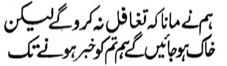
Tiyarima ami a kena ba kami niyo di mapezagipa, ogaid na pembaloy kami a lopapek o ona-an o di niyo rekami kainengka-a.
Madakel a ipenda-owa iran na so manga madrasah a gi-i paganadan ko Qur’an na ipephangimbitar o manga guro ka an siran pephakakowa sa pekhen niran. Giyangka-i [a pamikiran] na khitempo ko ni-at angkanan a manga guro. So siran a mimba-as sangkanan a pamikiran na maphanembag iran angkanan a kabokhagan, a perinayagen ko Akhirat. Pangeni ko siran noto a ilaya iran so rarad o galebek angkanan a bebethowan niran sa “manga liliget a manga guro” ago so khapakay a manggola-ola o [aya onoti na so] pamikiran niran. So Rasulollah (Sallallaho ‘Alaihi Wasallam) na inisogo iyan reketano so kipangenda-on ko Qur’an. Siran den-i kokom antona-i kala a mini-ogop iran sa kinggolalan angkanan a sogo-an o Rasulollah (Sallallaho ‘Alaihi Wasallam). So pamakinegan niran na si-i peman paka-antapa ko isa pen a dadag a pamikiran. So saba-ad a manga tao na khapakay a aya mapipikir iran na kena ba siran ped ko gi-i manggola-ola a sopak ko Qur'an sa giyoto-i sabap a gi-i ran i-aawid a akal, ogaid na di kiran noto phakasabet ko rarangit o Allah.
So manga Sahabah (Radhiallaho ‘Anhom) na pitharo iran ko Rasulollah (Sallallaho ‘Alaihi Wasallam):
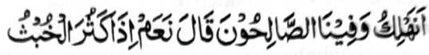
“Ino ba kami khabinasa ko kapapadalem rekami pen o phipiya-piya? Pitharo iyan, ‘Oway amay ka ndakel so marata. ”’
Aden pen a isa a Hadith a lagida-i, “Inisogo o Allah a kheliden angkoto a isa a inged. Pitharo o Jibrail (Alaihis Salaam) a aden a sakatao a manosiya sangkoto a inged a daden a miyasogok iyan a dosa. Pitharo o Allah a benar, ogaid na mapiya pekha-ilay niyan so kapezopaka Raken, na daden mailay ko paras iyan o ba miyaka-keres [pantag sa di kasoso-at].” Aya mata-an, na misabap sangka-iya manga Hadith a so manga Ulama na di kiran khaparo o di ran matharo so di ran kasoso-at igira miya-ilay ran a aden a pekhisopak ko Allah a gi-i manggola-ola. Tanto a rata sa ginawa a so siran a bebethowan sa somasabot a manga tao na ibebetad iran angkanan sa kababao a pamikiran o manga Ulama. Giyangkanan a bebethowan sa malathos a pamikiran angkanan a manga tao na di ran khilidas ko atas-tanggongan niran [ko kisapar o marata]. Sabota iran a kena ba aya bo a kapapaliyogatan na so manga Ulama ko kaphagalangi ko kapezopaka ko manga sogo-an o Allah. Giyangka-i na galebek o pithanggisa-an a Muslim a pekha-ilay niyan so sopak a khagaga niyan so kisapar niyan non. So Bilal Ibne Sa’d (Radhiallaho ‘Anho) na miyatharo iyan, “O so marata a ola-ola na pagenes a kiyanggalebeka on na aya bo a khasiksa na so mindosa, ogaid na o marayag, na da-a somaparon, na so langon o tao na khasiksa.”
(28) Aden a manga tao a mabalaya ko totholan ko miyanga o-ona, ago gi-i ndalakao ka pembatiya-an niyan so manga andang a kitab ko bandaran apiya anda iran pekhato-on a darepa. Giyangkanan a manga tao na taralebi a aya iran biyatiya so Qur’an, ka khato-on niran non so saginda o apiya antona-a totholan ko manga ped a kitab a sasarigan so kabebenar iyan pantag ko miyanga i-ipos a masa.
(29) O aya kabaya a ka na maparoli ngka so maporo a daradat a apiya so manga Nabi na inisogo kiran so kaontod iran ko obay ngka ago mangeped siran ko kalilimod iyo, na khakowa ngka oto a nggolalan ko Qur’an. (So Hadith a ika 29 na makapantag si-i)
(30) O peman o di ka mababaya melogat a di ngka khategel a ginawangka ko kanggalebek sa maregen, na apiya giyanan pen na khakowa ngka so mababantog a daradat a di ngka kaphelogatan a nggolalan ko Qur’an. Ontod ka na pephamamakinega ngka so manga wata a pembatiya-an niran so Qur’an sa Madrasah. Ro-o na khakowa ngka so mala a balas a daden a kiyalogat ka on. (Maka-aantap si-i so Hadith a ika 30).
(31) O mababaya ka sa mbaram-barang, na phakato-on ka sa mbaram-barang a pamikiran ago mbaram-barang a osayan ko Qur’an, so saba-ad na makapantag ko limo, so saba-ad na pantag ko siksa, so saba-ad na pantag ko totholan ko mbarumbarang a miyanggola-ola, ago so saba-ad na pantag ko mbarumbarang a sogo-an, go so manga ped iyan. Khapakay pen a salinen ka so okit a kapemhatiya-a ka, maipes ko saba-ad o di na matanog si-iko saba-ad (Ilaya ngka so Hadith a ika 31)
(32) O so manga dosa ngka na tanto a miyakalepas ko takes ago seka na miyaratiyaya sa aden a gawi-i a phatay ka, na so manga Hadith a ika 32 taman ko ika 34 na thapa-osan ka niyan sa da-a mailang a oral ka ago kapho-onan ka so kabatiya-a ngka ko Qur’an, sabap sa dapen a mato-on ka a mabager a phanapa-at, a so pangeni niyan na maga-an a kakhatarima-a on. Sakamaoto a o seka na bara-adaten a so kababaloy ngka a bara-adaten ago bi lang a tao na miyagenggen ka niyan ko kapakiphawala ko manga tao a panonontot, apiya aya den a miyada na so mala-i arga a kabenar ka, na o ba ngka miphawala so Qur’an ko Gawi-i a Kaphangokom, ko masa a seka-niyan bo-i mabager a phanontot, a so tontot iyan na aya phamondas ago da a isa bo a ba niyan maliniding so penthontotan.
(33) O kailangan ka sa makatoro a kaonotan ka niyan ko walay o pagida-an ka, na so tao na apiya-i mibayad iyan na imbayad iyan sangkoto a palatiko, na bangka den pembatiya-a so Qur’an. Sakamaoto a o seka na kabaya-a ka so kalinding ka ko kakalaboso, na da den a khilidas kaon inonta so kapembatiya-a ko Qur’an.
(34) O mababaya. ka sa [kandalakao ko] manga kapalawan a aya reka bo pephakabegay sa katembangan ago kasoso-at, na kenala ngka a so Qur’an na khabegan ka niyan sa katembangan ko manga palao a kastori, apiya sangkoto a Gawi-i a Kaphangokom a so manga ped a kaa-den na madadalem ko tanto a kalek. (So Hadith a ika 36 na maka-antap si-i)
(35) O kabaya-a ka a makalawan so simba ngka ko Allah misabap ko gi-i ngka kapanambayang sa Sunnat ko gagawi-i daon-dao, na kenala ngka a so kipamangenda-on ago so kapaganada ko Qur'an na lebi a mala-i kipantag a di so kanggalebak ro-o. (Ilaya ngka so Hadith a ika 37)
(36) O kabaya-a ka a ma-awat ka ko langon o tiyoba ago milidas ka ginawa ngka ko langon o boko, na malebod a kekhasowa-a ngka ro-o mokit sa katatapa ngka ginawa ngka ko Qur’an (Mitotorowa-i ko Hadith a ika 40).
(37) O kailangan a imbitiyara-i ngka so doktor, na kenala ngka a so ‘Surah Fatihah na phakabolong ko langowan a sakit, ilaya ngka so Hadith 1 ko Ba-ad a ika 2 - ko Polimposan a Ba-ad.
POLIMPOSAN A BA-AD
(1) O kadakelan ko manga kinanglan ka ko oman gawi-i na da ngka makowa, na ino ngka di mbatiya-a so Surah Yasin, ilaya ngka so Hadith 2 ko Ba-ad a ika 2 - ko Polimposan a Ba-ad.
(2) O gi-i ka zinganin sa pirak, na taralebi a batiya-a ngka so ‘Surah Waqi’ah). (So Hadith 3 ko Ba-ad a ika 2 - ko Polimposan a Ba-ad na maka-antap si-i)
(3) O ika-alek ka so siksa ko Qobor, na khada-oto misabap ko Qur’an, ilaya ngka so Hadith 4 ko Ba-ad a ika 2 - ko Polimposan a Ba-ad.
(4) O ba ka pembabanog sa galebek a khalengan niyan so oras ka, na daden a mato-on ka a ba niyan kalawani so Qur’an, ilaya ngka so Hadith 5 ko Ba-ad a ika 2 - ko Polimposan a Ba-ad.
(5) O makowa o tao so tamok o [sabot ko] Qur’an, na siyapa niyan phiya-piya ka oba mada. So kada angkanan a limo, ko oriyan o kakowa-aon, na mala a kabinasa-an. Pananggila-i niyan so manga ilang a galebek ka amay-amay na ba niyan mabaloy angka-iya limo a morka. (ilaya ngka so manga Hadith a ika 6 ago ika 7 ko Ba-ad a ika 2 - ko Polimposan a Ba-ad.)
(6) Katawan aken a di aken khagaga so ka-aloya ko manga kapiya o Qur’an. Inosay aken pho-on ko maito a sabot aken. Giya-i, na so kamata-ani ron, na kiyaleka-an niyan so lama-lama o geda-geda o manga Ulama a madalemi sabot. Pitharo o siran a mala-i sabot ko kapangabaya, a giyangka-iya a lima a sipat o pekhababaya-an a phakagawi sa babaya. Paganay ron na so kababaloy a oyag-oyag so pekhabaya-an, a giyoto-i lebi a singanin o tao. So kapekhasalin o mosim na da-a rarad iyan ko bontal o Qur’an; giya-i kasarigan sa kiyabaloy niyan a oyag-oyag ago masisiyap. Ika dowa, so ka-aden o thompokan o pephangabaya ago so pekhabaya-an niyan. So Qur’an na sipat o Allah. So thompokan o Miyangaden ago so ka-ader Niyan, so Kadenan ago so oripen niyan, na marayag a tanto. Sakatao a pababayok a tag; Persia a pitharo iyan
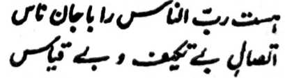
So Miyaden ko manosiya na aden a thompokan niyan ago so kaoya-goyag o manosiya a di zaboten ago di khasekho.
Pitharo pen o sakatao a pababayok a Urdu:
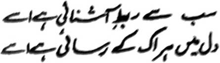
Mitotompok sekaniyan sa ropa kangginawa-i ko langon niran den noto; ka phera-oten niyan [a gagao] so poso o pithanggisa-an.
Aya ika telo, ika pat, ago ika lima a sipat na so kata-id so kabilang a tao ago so kaginawa.
O giyangkanan a miyanga-aaloy a manga Hadith na phamimikirana phiya-piya, a giyangkanan a telo a sipat a miyanga-aaloy (ma-ana kata-id, kabilang a tao, ago kaginawa; na aya mababaloy a takes, na so manga Ulama na di siran den maso-at sangka-iya a inizorat aken, ka aya kamata-ani ron na salakao a kha-akhiran kiran a panarima a so kadakelan ko pagilayn a khasabapan sa babaya ago kasoso-at, ibarat o pada-adat ago daradat, babaya ago katatap, kataid ago kada a pa-awing, kala ago kalimo, kalilintad ago kapipiya gmawa, tamok ago milik, so katimbel iyan na langon o nganin a khasabapan sa babaya na minitoro o Rasulollah (Sallallaho ‘Alaihi Wasallam) a palayaden kagaganggaman o Qur’an si-i ko pithamanan a maporo a okit. Baden aya wara-an na so saba-ad sangka-iya a manga kalbihan na migagaben, sa kena ba mananaros a kakhailaya on sa lagid o kadakelan ko manga paga-arega-an sangka-iya donya. Kena ba tano khagowaden so kamis o onga sapad sabap bo ke kakerang iyan-i opis. Da-a tao a ba niyan kagowaden so pagida-an iyan ko kasosolot iyan sa nikab. Tanto niyan a pephanamaran a kasawa o pagida-an niyan sa nikab, ogaid na o di niyan magaga na giyabo angkoto a kapekhailaya niyan sangkoto a nikab na pephakata-saron den, amay ka matangked iyan a giyangkoto a nikab na aya somosoloton na so pagida-an niyan. Mata-an, a so Qur’an na lomalawan ko langon o kalbihan a pephakagawi ko babaya, ogaid na opama aden a sabap a salakao a di tano kasabotan ago makilala siran [a manga kalbihan], na kena ba aya mapiya na ba tano den talikhodi o di na ba tano ron den di maso-at. Itakay tano so da tano ron kasaboti ko kaito tano-i sabot sa ikharata a ginawa tano angkoto a kiyalapis tano. Paliyogat reketano so kapephamimikirana tano ko manga kapiya o Qur'an ago balowin tano a mala-i kipantag so kasaboti tano ko Kitab o Allah.
So ‘Uthman (Radhiallaho ‘Anho) ago so Huzaifah (Radhiallaho ‘Anho) na miyapanothol iran a opama ka so poso na masoti ko langowan a boring, na diden katatayo-an so tao ko kapembatiya-a niyan ko Qur’an. So Thabit Banani (Rahmatullahi ‘Alaihi) na pitharo iyan, “Miromasay ako ko soled o miyaka-dowa polo ragon ko kasabota ko ko Qur’an na pekhabegan ako niyan sa kapipiya ginawa sangka-iya a miyaka-dowa polo ragon.” Giyoto-i sabap a miyakarayag a sa thaobaten niyan so manga dosa niyan, na oriyan niyan na pamimikiranen niyan so Qur’an, na khatokawan niyan a madadalemon so langowan a madadalem ko kalangowan o pekhababaya-an. O ba saken bo angkanan a tao. Pephangeni naken ko langowan a pembatiya si-i a di ran pagila-ya so kababa-a tao o mizorat si-i, ka amay amay na ba aya kiran makaren ko kikhisampay ran ko singanin iran, sa aya ilaya iran na so madadalem si-i a osayan ago so piyangapoo-onan niran. Ayabo a ni-at aken si-i na pephaki-inengka aken kiran angka-iya a manga bandingan.
Si-i sangka-iya masa, na khapakay a aden a saba-ad a pembatiya sangka-iya kitab a inikalimo o Allah sa kiyadalema Niyan non ko babaya ko kasowa-a ko Qur’an a milangag iyan sa mbaloy sekaniyan a ‘hafiz’. O aden a kabaya iyan a mbaloy so wata iyan a ‘hafiz’, na da-a a mala a karomasayan non a mapenggalebek iyan sabap sa kiyatangka-an den angkoto a kaito angkoto a wata a giyoto-i masa a tanto a mapiya a kaphakalangag iyan. Ogaid na opama ka aya melangag sa Qur’an na so mikhasad den, na mosawir aken a pho-on sekaniyan den mamangeni pantag si-i, a ini-osiyat o Rasulollah (Sallallaho ‘Alaihi Wasallam) ago miya-ilay o kadakelan a tao sa tanto a mirarad. Miyapanothol o Tirmizi, so Hakim ago so manga ped angka-iya a tothol:-
Piyanothol o Ibn-e Abbas (Radhiallaho ‘Anhoma) a miyaka-isa na mo-onot sekaniyan ko Rasulollah (Sallallaho ‘Alaihi Wasallam) na miyakasoled so Ali (Radhiallaho ‘Anho) ago pitharo iyan, “Ya Rasulollah (Sallallaho ‘Alaihi Wasallam), tanto ka raken a mala-i arga a di so ama aken ago so ina aken. Tipengan aken a ilangag aken so Qur’an na di aken khagaga, sabap sa pekhada bo sa pamikiran aken.” Pitharo o Rasulollah (Sallallaho ‘Alaihi Wasallam), “Ba ko reka petharo-a so phaka-ompiya reka ago siran a kharampayan ka on?” Oriyana-i na di ngka den kalipatan so langowan o miyasowa-a ka” Si-i ko pangeni o Hadrat Ali (Radhiallaho ‘Anho) na pitharo o Rasulollah (Sallallaho ‘Alaihi Wasallam), “Si-i ko kagabinan ko Khamis, na mbowat ka ko mori a ika telo bagi ko kagagawi-i, o khagaga ngka, ka sabap sa giyoto-i taralebi a masa ko kagagawi-i, sabap sa giya-i so masa a pethoron so manga Mala-ikat ago so manga pangeni na tatarima-an. Giya-i so masa a gi-i penayaon o Hadrat Yaqub (Alaihis Salaam) ko kiyatharo-a niyan non sa so manga wata iyan na, si-i bo ko marani a masa, inipamangeni niyan sa rila ko Kadenan iyan. Opama ka maregen a kapaka-pembowat ka sangkoto a masa, na si-i ngka nggola-ola-a ko kalo-okan a gawi-i, go o di pen noto khagaga na zambayang ka sa pat raka-at ko paganay a gawi-i. Oriyan ko kabatiya-a ngka ko Surah Fatihah na si-i ko omani isa ka raka-at na sakeben ka ko paganay ron a rak-at so ‘Surah Yasin’, so ‘Surah Dukhan’ ko ika dowa rak-at, so ‘Surah Alif-Lam-Mim Sajdah’ ko ika telo rak-at ago so ‘Surah Al-Mulk’ ko ika pat rak’at. Oriyan o kapasad o At-tahiyat na phodi-podiya ngka so Allah sa madakel, ago salawati ako ngka ago so langowan o manga sogo o Allah (ma-ana so manga Rusol ago so manga Nabi), ago pamangeni neka sa rila so langowan a miyaratiyaya ago so manga pagari ngka a Muslim a miyamatay ko ona-an ka, na oriyan niyan a batiya-a ngka angka-iya dowa-a.”
Si-i ko ona-an pen o dowa-a na aden a mbaram-barang a okit o
“hamd-o-thana” (kaphodi-podi ago kapanasbih) a sarat ko ona-an
angka-iya dowa-a a miya-aloy ko manga ped a Hadith a misosorat ko
[kitab a] ‘Shuruh-e-Hisn’ ago ‘Munajat Maqbul’. So phakabatiya
sangka-iya manga kitab na kahto-on niran non so okit o kinggolalanen
non a khabager iyan so pangeni ran. Sabap ko kalebodi ko manga tao a
di ran khabatiya angka-iya manga kitab, na mababa a pagalowin si-i:
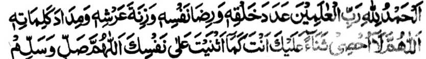
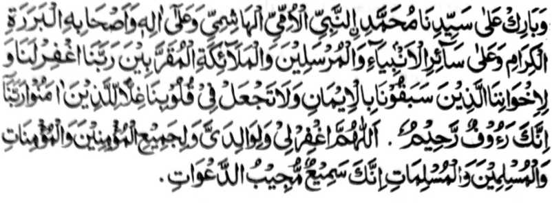
"So langowan o podi na rek o Allah a Kadenan o langowan o ka-aden sa (diyangka) o itongan o langowan o inaden Niyan, go so kapened o Arsh Iyan, go so (kala o) dawat a khaosar ko kisorat o manga Katharo Iyan. Ya Allah! Na di aken khatekhad so bantogan a miyapatot Reka a giyoto so Seka na inibantog Ka ko Ginawa Ngka. Ya Allah! Na begi Ngka sa kalilintad ago kabarakat so dato ami a Mohammad, a Nabi a Ommi (di mata-o matiya ago di mata-o zorat), a mbawata-an o Hashim, na rakhes o manga ta-alok rekaniyan go so manga bolayoka iyan a khisesela-an, go so kalangowan o manga Ambiya go so manga Rasul go so manga Mala-ikat Moqarrabin (manga rarani ko Allah). Kadenan nami na rila-i kami Ngka go so manga pagari ami a siran so miya-onaan ami ko paratiyaya go di Ngka ndalema ko manga poso ami so rarangit ko khipaparatiyaya. Kadenan nami ka Seka na mata-an a Mama-apen a Masalinggagao. Ya Allah! Na rila-i ako Ngka go so mbala a lokes aken go so kadandan o miyaratiyaya mama ago so miyaratiyaya babay go so Muslim a mama ago so Muslim a babay. Mata-an a Seka-i Pephakaneg ago Pephanarima ko manga pangeni. ”
Oriyana-i, na kati-i peman so dowa-a a inipangenda-o Rasulollah (Sallallaho ‘Alaihi Wasallam) ko Hadrat Ali (Radhiallaho ‘Anho), ko kiya-aloy niyan sangkanan a miya-ona a Hadith, a mbatiya-an pen:
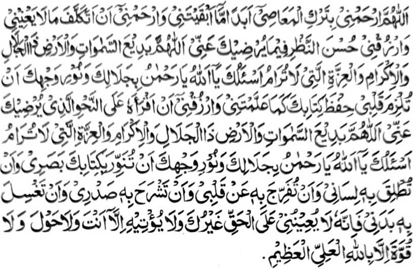
"Ya Allah! Na kalimo-on ako Ngka sa kibagaken aken ko manga galebek a dosa ko tenday a kapaka-pephaginetao Angka raken go kapedi-in ako Ngka ka an aken di mapezaloba so da-a kipantag iyan a galebek go began Ka raken so ikhaso-al Ka raken. Ya Allah! A Miyaden ko manga langit ago so lopa a khirek ko Kaporo ago so Bantogan go so Bager a di khatekhad. Phangenin ko Reka Ya Allah! Hay Masalinggagao! sabap ko Kaporo-o Ka go so Sindao o Bontal Ka a ilahamen Ka ko poso aken so kilangagen aken ko Kitab Ka sa lagid den o kiyapangenda-o Angka raken Go began Ka raken so kabatiya-a on ko okit a ikhaso-at Ka raken. Ya Allah! A Miyaden ko manga langit ago so lopa a khirek ko Kaporo ago so Bantogan go so Bager a di khatekhad. Phangenin ko Reka Ya Allah! Hay Masalinggagao! sabap ko Kaporo-o Ka go so Sindao o Bontal Ka, a sindawi Ngka so kailaya aken ko ped ko sindao o Kitab Ka go so pakibalesen Ka sekaniyan ko dilaaken go pakakhapa Ngka so kapened iyan ko poso aken go paka-olada Ngka raken si-i rekaniyan so rareb aken go soti Angka misabap rekaniyan so badan aken. Mata-an a daden a phakatabang raken si-i ko benar a salakao Reka go da a salakao reka a phakabegay raken si-i rekaniyan. Go da-a bager go da-a ge-es inonta so pho-on ko Allah a Maporo ago Mala.”
So Rasulollah (Sallallaho ‘Alaihi Wasallam) na pitharo iyan pen ko Hadrat ‘Ali (Radhiallaho ‘Anho), “Kasoya ngka angka-iya ola-ola ko soled o makatelo, maka lima o di na maka-pito a Juma'at. O kabaya o Allah, na tharima-an Niyan den so pageni ngka. Ibet ko Sekaniyan a biyaloy ako Niyan a Nabi ka so katarima o pangeni niyan na diden khapapas ko apiya antawa-a miyaratiyaya.”
So Ibn-e ‘Abbas (Radhiallaho ‘Anhoma) na pitharo iyan a dapen misamapay sa miyakalima o di na miyakapito a Juma’at na komiyasoy so ‘Ali (Radhiallaho ‘Anho) ko Rasulollah (Sallallaho ‘Alaihi Wasallam) na pitharo iyan, “Si-i ko miya-ona na pekhilangag aken so pat timan a Ayaat ogaid na di aken khatanodan, na imanto na pekhapat-polo-an ako na pekhatademan aken sa tanto a maliwanag sa lagid o ba ko o-okaba so Qur’an. Isa ko mona na omani maneg aken a Hadith na o khasoya ko na di aken khatanodan, na imanto na so pekhaneg aken a manga Hadith na igira piyanothol aken ko manga ped na daden a khibagak aken non a satiman bo a kalimah.”
Phangenin ko Allah a ikalimo ako Niyan a milangag aken so Qur’an ago so Hadith sabap ko gagao o Nabi niyan.
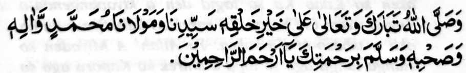
So sanang a maliwanag a go so kalilitad a pho-on ko Allah a Soti ago Maporo na si-i ko Makalelebi ko manga kaaden Niyan a Dato ami a Muhammad rakhes o manga ta-alok rekaniyan go so manga bolayoka iyan misabap ko Limo o Ka Hay Makalimo-on ko langowan o Pephamangalimo